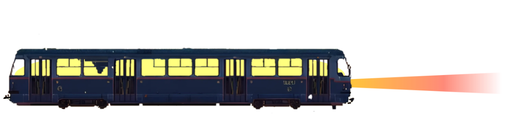

আজ আমার বয়স সাতাশ মাত্র। এ জীবনটা না দৈর্ঘ্যের হিসাবে বড়ো, না গুণের হিসাবে। তবু ইহার একটু বিশেষ মূল্য আছে। ইহা সেই ফুলের মতো যাহার বুকের উপরে ভ্রমর আসিয়া বসিয়াছিল, এবং সেই পদক্ষেপের ইতিহাস তাহার জীবনের মাঝখানে ফলের মতো গুটি ধরিয়া উঠিয়াছে।
সেই ইতিহাসটুকু আকারে ছোটো, তাহাকে ছোটো করিয়াই লিখিব। ছোটোকে যাঁহারা সামান্য বলিয়া ভুল করেন না তাঁহারা ইহার রস বুঝিবেন।
কলেজে যতগুলো পরীক্ষা পাস করিবার সব আমি চুকাইয়াছি। ছেলেবেলায় আমার সুন্দর চেহারা লইয়া পণ্ডিতমশায় আমাকে শিমুল ফুল ও মাকাল ফলের সহিত তুলনা করিয়া বিদ্রূপ করিবার সুযোগ পাইয়াছিলেন। ইহাতে তখন বড়ো লজ্জা পাইতাম; কিন্তু বয়স হইয়া এ কথা ভাবিয়াছি, যদি জন্মান্তর থাকে তবে আমার মুখে সুরূপ এবং পণ্ডিতমশায়দের মুখে বিদ্রূপ আবার যেন এমনি করিয়াই প্রকাশ পায়।
আমার পিতা এতকালে গরিব ছিলেন। ওকালতি করিয়া তিনি প্রচুর টাকা রোজগার করিয়াছেন, ভোগ করিবার সময় নিমেষমাত্রও পান নাই। মৃত্যুতে তিনি যে হাঁফ ছাড়িলেন, সেই তাঁর প্রথম অবকাশ।
আমার তখন বয়স অল্প। মার হাতেই আমি মানুষ। মা গরিবের ঘরের মেয়ে; তাই, আমরা যে ধনী এ কথা তিনিও ভোলেন না, আমাকেও ভুলিতে দেন না। শিশুকালে আমি কোলে কোলেই মানুষ-- বোধ করি, সেইজন্য শেষ পর্যন্ত আমার পুরাপুরি বয়সই হইল না। আজও আমাকে দেখিলে মনে হইবে, আমি অন্নপূর্ণার কোলে গজাননের ছোটো ভাইটি।
আমার আসল অভিভাবক আমার মামা। তিনি আমার চেয়ে বড়োজোর বছর ছয়েক বড়ো। কিন্তু ফল্গুর বালির মতো তিনি আমাদের সমস্ত সংসারটাকে নিজের অন্তরের মধ্যে শুষিয়া লইয়াছেন। তাঁহাকে না খুঁড়িয়া এখানকার এক গণ্ডূষও রস পাইবার জো নাই। এই কারণে কোনো কিছুর জন্যই আমাকে কোনো ভাবনা ভাবিতে হয় না।
কন্যার পিতা মাত্রেই স্বীকার করিবেন, আমি সৎপাত্র। তামাকটুকু পর্যন্ত খাই না। ভালোমানুষ হওয়ার কোনো ঝঞ্ঝাট নাই, তাই আমি নিতান্ত ভালোমানুষ। মাতার আদেশ মানিয়া চলিবার ক্ষমতা আমার আছে-- বস্তুত না-মানিবার ক্ষমতা আমার নাই। অন্তঃপুরের শাসনে চলিবার মতো করিয়াই আমি প্রস্তুত হইয়াছি, যদি কোনো কন্যা স্বয়ম্বরা হন তবে এই সুলক্ষণটি স্মরণ রাখিবেন।
অনেক বড়ো ঘর হইতে আমার সম্বন্ধ আসিয়াছিল। কিন্তু মামা, যিনি পৃথিবীতে আমার ভাগ্যদেবতার প্রধান এজেণ্ট, বিবাহ সম্বন্ধে তাঁর একটা বিশেষ মত ছিল। ধনীর কন্যা তাঁর পছন্দ নয়। আমাদের ঘরে যে মেয়ে আসিবে সে মাথা হেঁট করিয়া আসিবে, এই তিনি চান। অথচ টাকার প্রতি আসক্তি তাঁর অস্থিমজ্জায় জড়িত। তিনি এমন বেহাই চান যাহার টাকা নাই অথচ যে টাকা দিতে কসুর করিবে না। যাহাকে শোষণ করা চলিবে অথচ বাড়িতে আসিলে গুড়গুড়ির পরিবর্তে বাঁধা হুঁকায় তামাক দিলে যাহার নালিশ খাটিবে না।
আমার বন্ধু হরিশ কানপুরে কাজ করে। সে ছুটিতে কলিকাতায় আসিয়া আমার মন উতলা করিয়া দিল। সে বলিল, 'ওহে, মেয়ে যদি বল একটা খাসা মেয়ে আছে।'
কিছুদিন পূর্বেই এম.এ. পাস করিয়াছি। সামনে যতদূর পর্যন্ত দৃষ্টি চলে ছুটি ধূ ধূ করিতেছে; পরীক্ষা নাই, উমেদারি নাই, চাকরি নাই; নিজের বিষয় দেখিবার চিন্তাও নাই, শিক্ষাও নাই, ইচ্ছাও নাই-- থাকিবার মধ্যে ভিতরে আছেন মা এবং বাহিরে আছেন মামা।
এই অবকাশের মরুভূমির মধ্যে আমার হৃদয় তখন বিশ্বব্যাপী নারীরূপের মরীচিকা দেখিতেছিল-- আকাশে তাহার দৃষ্টি, বাতাসে তাহার নিশ্বাস, তরুমর্মরে তাহার গোপন কথা।
এমন সময় হরিশ আসিয়া বলিল, 'মেয়ে যদি বল, তবে--'। আমার শরীর মন বসন্তবাতাসে বকুলবনের নবপল্লবরাশির মতো কাঁপিতে কাঁপিতে আলোছায়া ধুনিতে লাগিল। হরিশ মানুষটা ছিল রসিক, রস দিয়া বর্ণনা করিবার শক্তি তাহার ছিল, আর আমার মন ছিল তৃষার্ত।
আমি হরিশকে বলিলাম, 'একবার মামার কাছে কথাটা পাড়িয়া দেখো।'
হরিশ আসর জমাইতে অদ্বিতীয়। তাই সবর্ত্রই তাহার খাতির। মামাও তাহাকে পাইলে ছাড়িতে চান না। কথাটা তাঁর বৈঠকে উঠিল। মেয়ের চেয়ে মেয়ের বাপের খবরটাই তাঁহার কাছে গুরুতর। বাপের অবস্থা তিনি যেমনটি চান তেমনি। এককালে ইহাদের বংশে লক্ষ্মীর মঙ্গলঘট ভরা ছিল। এখন তাহা শূন্য বলিলেই হয়, অথচ তলায় সামান্য কিছু বাকি আছে। দেশে বংশমর্যাদা রাখিয়া চলা সহজ নয় বলিয়া ইনি পশ্চিমে গিয়া বাস করিতেছেন। সেখানে গরিব গৃহস্থের মতোই থাকেন। একটি মেয়ে ছাড়া তাঁর আর নাই। সুতরাং তাহারই পশ্চাতে লক্ষ্মীর ঘটটি একবারে উপুড় করিয়া দিতে দ্বিধা হইবে না।
এ-সব ভালো কথা। কিন্তু মেয়ের বয়স যে পনেরো, তাই শুনিয়া মামার মন ভার হইল। বংশে তো কোনো দোষ নাই? না, দোষ নাই-- বাপ কোথাও তাঁর মেয়ের যোগ্য বর খুঁজিয়া পান না। একে তো বরের হাট মহার্ঘ, তাহার পরে ধনুকভাঙা পণ, কাজেই বাপ কেবলই সবুর করিতেছেন কিন্তু মেয়ের বয়স সবুর করিতেছে না।
যাই হোক, হরিশের সরস রসনার গুণ আছে। মামার মন নরম হইল। বিবাহের ভূমিকা-অংশটা নির্বিঘ্নে সমাধা হইয়া গেল। কলিকাতার বাহিরে বাকি যে পৃথিবীটা আছে সমস্তটাকেই মামা আণ্ডামান দ্বীপের অন্তর্গত বলিয়া জানেন। জীবনে একবার বিশেষ কাজে তিনি কোন্নগর পর্যন্ত গিয়াছিলেন। মামা যদি মনু হইতেন তবে তিনি হাবড়ার পুল বার হওয়াটাকে তাঁহার সংহিতায় একেবারে নিষেধ করিয়া দিতেন। মনের মধ্যে ইচ্ছা ছিল, নিজের চোখে মেয়ে দেখিয়া আসিব। সাহস করিয়া প্রস্তাব করিতে পারিলাম না।
কন্যাকে আশীর্বাদ করিবার জন্য যাহাকে পাঠানো হইল সে আমাদের বিনুদাদা, আমার পিস্তুতো ভাই। তাহার মত, রুচি এবং দক্ষতার 'পরে আমি ষোল-আনা নির্ভর করিতে পারি। বিনুদা ফিরিয়া আসিয়া বলিলেন, 'মন্দ নয় হে! খাঁটি সোনা বটে।'
বিনুদাদার ভাষাটা অত্যন্ত আঁট। যেখানে আমরা বলি 'চমৎকার', সেখানে তিনি বলেন 'চলনসই'। অতএব বুঝিলাম, আমরা ভাগ্যে প্রজাপতির সঙ্গে পঞ্চশরের কোনো বিরোধ নাই।